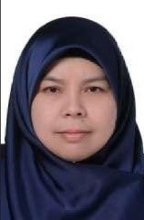
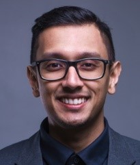
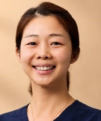

Webinar Speakers
Day 1 Speakers — Saturday, 19 September 2026
Dr. Nurul Syakirin Binti Abdul Shukor
Dental Public Health Specialist
Secretary, Malaysian Dental Council
Title
“Practicing Dentistry in Malaysia – What You Need to Know”
Dr. Ling Xiao Feng
BDS, MDS Oral & Maxillofacial Surgery, MFDS (RCS), IBCSOMS (USA)
International Dental Federation (FDI)
Title
“Speciality posting at a glance: Oral & Maxillofacial Surgery”

Dr. Nur'adilah Binti Ahmad Othman
BDS, DClin Dent (Paediatric Dentistry)
Head of Paediatric Dentistry Speciality, Hospital Sultanah Bahiyah, Malaysia
Title
"Speciality posting at a glance: Pediatrics Dentistry"
Dr. Ratna Devi Sundaram
BDS, Dip. Orthodontics (AFO New York)
Dental Surgeon, Entrepreneur, CEO and Co-Founder of Mediwira Group Holdings
Title
"From Graduate to Practice Owner: Setting Up Your Dental Clinic"
Maj. Dr. Ashwin Nathan
BDS, MFDS RCSed
Dental Officer, Malaysian Armed Forces
Title
"Towards the Career You Always Wanted - Armed Forces"
Dr. Muhammad Hamidie Saari
BDS, Doctor of Dental Public Health
Dental Public Specialist
Title
"Towards the Career You Always Wanted - Ministry of Health"
Dato' Dr. Shah Kamal Khan Bin Jamal Din
MBBS, BDS, FDSRCPS Glasgow, Cert. OMFR Reconstructive Microvascular Surgery
Senior Consultant in Oral & Maxillofacial Surgery, AIMST University
Title
"Beyond the White Coat: Dress, Demeanor and Workplace Etiquette in Dentistry"
Day 2 Speakers — Sunday, 20 September 2026
Dr. Auleep Ganguly
BDS, MFDS RCSed, MSc
Dental Surgeon, United Kingdom
Title
“Licensing and Registration in the UK”

Dr. Shawn Dr. Tham
BDS, MFDS RCSed, Cert Ortho (NYU), ADC (Australia)
General Dental Practitioner, Restorative Dentistry, Clear Aligner Orthodontics
Title
“A Guide to Dental Registration in Australia”
Dr. Yeoh Eng Seng
BDS (Hons), FICOI (USA), Dip Dental Implantology (NUS), MFDS (RCSE)
Associate Dental Surgeon, AllSmiles Dental Care
Title
"Your Roadmap to a Singapore Dental Council (SDC) Registration & Hong Kong PG"

Dr. Beatrice Ng Ming Ming
BDS, MFDS (RCS), DClin Dent (Special Needs Dentistry)
Special Needs Dental Specialist, Canterbury
Title
"A Guide for Dental Council of New Zealand (DCNZ) Registration"
Dr. Suzanne Kan
BDS, DDS, UCLA Pediatric Dentistry Residency
American Board-Certified Pediatric Dentist, California
Title
"U.S Licensing Pathway: A Guide to Practising Dentistry in the USA"
Dr. Shince Mathew
BDS, DDS
General Dental Practitioner, Canada
Title
"Canadian Licensing Pathway for Dental Practice"
Dr. Vinesh Raj Savumthararaj
BDS (Oxford), MFDS RCSed, MOSC (UM), DrOMPathMed (UM), MIPHE (UK), Cert. Sleep Medicine (India), FAD, MBA (Lincoln)
Specialist in Oral Medicine and Oral & Maxillofacial Pathology, University Teknologi MARA (UiTM)
Title
"Dentist as Entrepreneur"